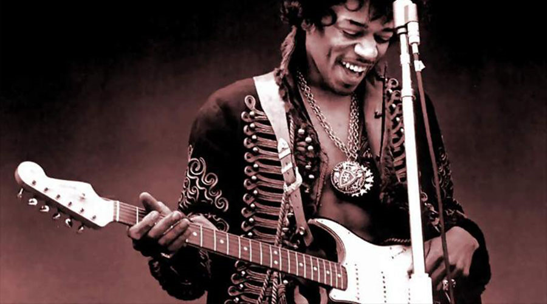

The Fender Stratocaster, colloquially known as the Strat, is a model of electric guitar designed between 1952 and 1954 by Leo Fender, Bill Carson, George Fullerton, and Freddie Tavares. The Fender Musical Instruments Corporation has continuously manufactured the Stratocaster since 1954. It is a double-cutaway guitar, with an extended top "horn" shape for balance. "Stratocaster" and "Strat" are trademark terms belonging to Fender. Guitars that duplicate the Stratocaster by other manufacturers are sometimes called S-Type or ST-type guitars. Many prominent rock musicians have been associated with the Stratocaster for use in studio recording and live performances, most notably Eric Clapton, Buddy Holly, David Gilmour, Mark Knopfler, Jimi Hendrix, Stevie Ray Vaughan, Mark Speer and George Harrison.

Jimi Hendrix with a stratocaster